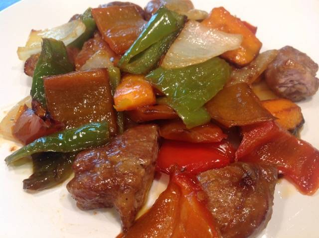

Solomillo de cerdo con champinones y cebolla caramelizada
Receta de Solomillo de cerdo con champinones y cebolla caramelizada.

Ingredientes
- 1/2 Solomillo de Cerdo
- 2 Patatas
- Espárragos Verdes (al gusto)
- Champiñones (al gusto)
- 1 Cebolla
- Aceite de Oliva
- 1 nuez de Mantequilla
- Sal, Pimienta negra, Azúcar
PARA LA MAYONESA
- 1 Huevo
- Gotas de Vinagre
- Mostaza (al gusto)
- Aceite de Oliva (suave 0,4)
- Sal
Elaboración (Pasos)
- Lo primero que haremos y que es lo que más tarda será poner a cocer las patatas.
- Partimos los espárragos por donde nos pidan y las partes más blandas una vez lavadas las partimos por el centro y las ponemos a cocer un par de minutos junto con las patatas.
- Pasado el tiempo las sacamos y las metemos en agua bien fría, lo hacemos así para parar la cocción y a la vez no pierdan el color verde tan bonito.
- Cortamos la cebolla muy fina y reservamos.
- Cortamos los tallos de los champiñones y pelamos las cabezas, los cortamos en cuartos y reservamos.
Volver